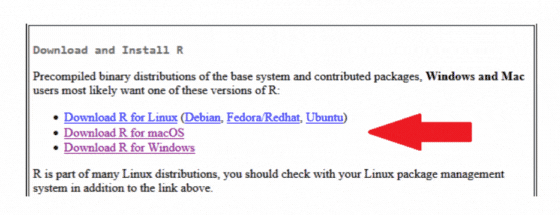
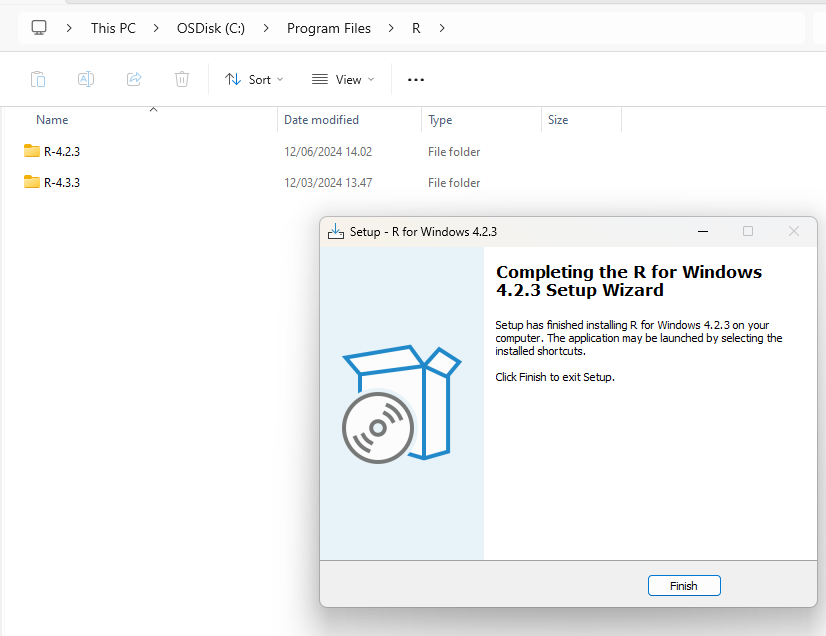
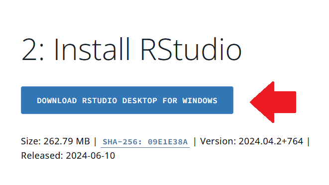
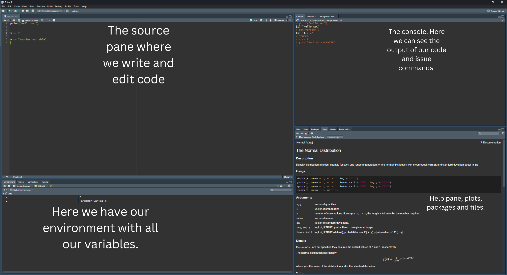
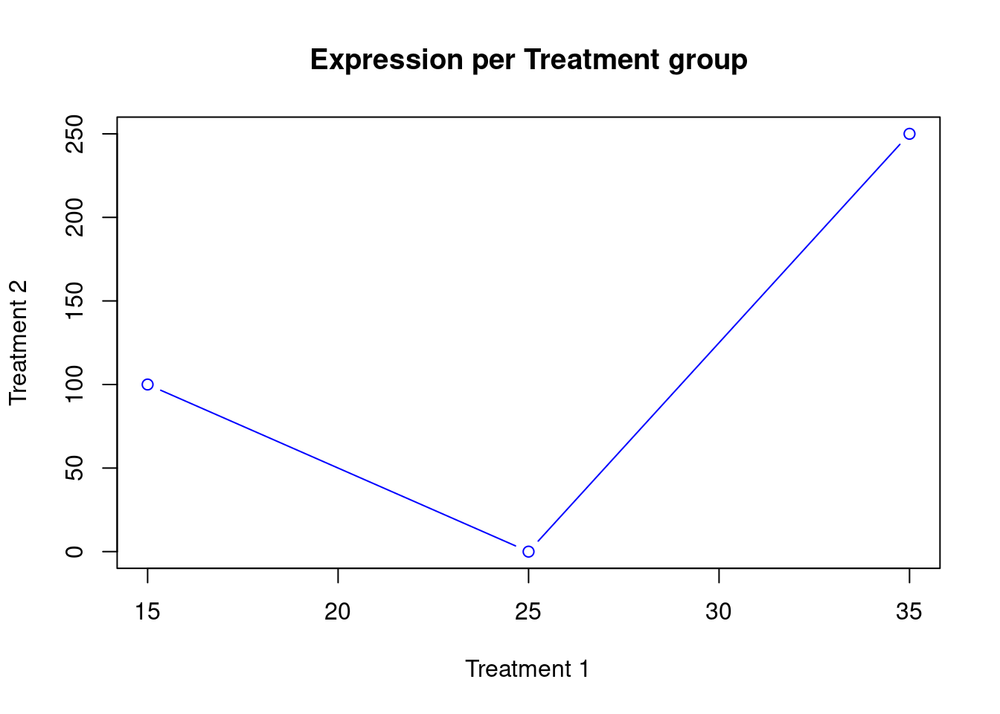
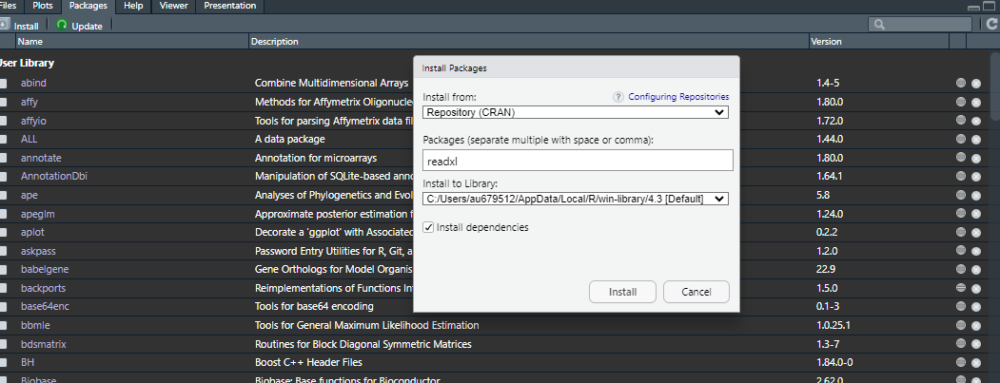

Click on “base” to download the base R. This is R with its basic functions.

Run the downloaded installer file and follow the default instructions.
Now R is installed in your system. In windows it looks like this:

You can see that because I had previously installed another version of R, there are two installations in separate folders. It is a good idea to stick with one version for the duration of a project. Always check the R version when you launch R - this can be done easily with the command R.Version().
Note
A good way of making sure that you don’t mix versions of the software you are using and their packages is to use a package manager (R includes a package manager called renv, but other like conda are often used), but that is a conversation for another day. For now we continue with the installation of Rstudio.
Try to launch R. It should be installed as any other software in your computer. You will see that it opens a simple command line, and informs you on the version you are using.
Install RStudio
When you install R alone, you can use it only through a rather primitive looking command line. This is why we use often softwares like RStudio, which provide a nicer interface to use R, including things such as a viewer for the data, an installer for the packages, a project manager, and a text editor. You don’t have to use all the many functions of RStudio, but it is very handy to know the basics.
Note
Rstudio is technically called an IDE (Integrated Development Environment) for the R language. An integrated development environment (IDE) is a software application that helps programmers develop software code efficiently. It increases developer productivity by combining capabilities such as software editing, building, testing, and packaging in an easy-to-use application.
Go to the Rstudio website. (Don’t get confused by the name, they simply changed it)
Download RStudio and start the installer

Follow the default options for installation
Getting Familiar with RStudio and writing Scripts
Rstudio Layout
Launch RStudio.
Familiarize yourself with the RStudio interface, which consists of:
Source Pane: Where you write and edit scripts.
Console Pane: Where you run commands and see output.
Environment/History Pane: Shows your workspace and command history.
Files/Plots/Packages/Help/Viewer Pane: Access your files, view plots, manage packages, get help, and view HTML output.

Make a simple script
Click on File > New File > R Script to open a new script editor.
Inside the file you created, Write a simple script. Copy for example the script below:
print("Hello ABC")x <-1:10y <- x^2plot(x, y, type="b", col="blue")
Try to run the script (The small Run button). Two things should happen:
An output is shown in the console (bottom left)
A plot is created and shown in the plotting window (bottom right)
the variables x and y are saved in your environment and can be seen in the variable explorer (top right). These variables can be used again since they exist in your computer’s memory.
Working directory
Every time you start working in R, this will be considering a working directory. Such directory is the reference point you are working in. For example, if you want to open a file, you need to know where it is in relation to your working directory, so that you can correctly write where it is. Write the command getwd() in the console and press Enter to see your current working directory.
Some basic operations
In R you can perform basic math operations by using the appropriate symbol. For example
2+39*25^2
You can assign variables (“objects”) using the symbol <-. For example
x <-5anothername <-3itCanBeAnything <-"It can be text"
Lets try some exercises!
Create a new script file or use the console to test some exercises below.
1. Create a data frame
We will create a simple data frame. A data frame is nothing more than a table, where both rows and columns have labels, and can be easily accessed and manipulated. To create a small data frame, we can define its columns. We define each column through a vector with the function c(), where we can write values inside separated by a comma. Then we provide all vectors to the function data.frame, where we assign column names (Gene, Control, Treatment1, Treatment2).
Note
Make sure your vectors are all of the same length! Also, each vector usually contains values of the same type (for example only numbers or only text)
You should be able to see the small data frame printed in output and also shown in the variable explorer.
2. Plot from a data frame
Now lets try to plot it Treatment 1 versus Treatment 2. The basic function for plotting in R is called plot. It takes as arguments the x axis and the y axis. It has other options which are not mandatory, such as style and color of the plot. Notice how we access the values in the columns using the $ sign.
plot( x = geneExpr$Treatment1, y = geneExpr$Treatment2 , main="Expression per Treatment group", xlab ="Treatment 1", ylab ="Treatment 2" , col ="blue" , type ="b")

You should be able to see a plot in the plotting window. In the command above we used many options beyond x and y. Can you see what they match in the plot?
3. Summary statistics
There are lots of summary statistics already implemented in R. Below we calculate mean, median and standard deviation for the column Treatment1 of the data frame and then we print them.
x <- geneExpr$Treatment1meanTr1 <-mean(x)medianTr1 <-median(x)sdTr1 <-sd(x)print("mean, median and sd:")
[1] "mean, median and sd:"
print(c(meanTr1, medianTr1, sdTr1))
[1] 25 25 10
This was neat! Can you try to calculate the cumulative sum of the difference between Treatment 1 and Treatment 2?
Answer
x <- geneExpr$Treatment1 - geneExpr$Treatment2csum <-cumsum(x)print("cumulative sum of Tr1 - Tr2:")
[1] "cumulative sum of Tr1 - Tr2:"
print(csum)
[1] -85 -60 -275
4. Define your own function!
Although R and the packages you can find have almost everything you will need, sometimes you might need to define your own function. The syntax to do it is very easy: you assign a function to a name, which then you will be able to use. Below, there is a function taking an argument (arg1) and multiplying it by 5. The function commands need to be between the curly brackets, and what we want as output need to be explicit through the return() function.
myFunction <-function(arg1){# Now arg1 is a variable of the function. # You can write comments inside code blocks with # output <- arg1 *5return (output)}
Such a function works if the argument is a number, but also if it is a vector!
print("with a number only")
[1] "with a number only"
myFunction(5)
[1] 25
print("with a vector")
[1] "with a vector"
myFunction(geneExpr$Treatment1)
[1] 75 125 175
Try to make a function that takes three vectors, plots the first against the sum of the second and third, and returns the sum of all three vectors. Use the plot command we applied previously for help.
Answer
simpleSumPlot <-function (arg1, arg2, arg3){ arg23 <- arg2 + arg3 arg123 <- arg1 + arg2 + arg3#plottingplot( x = arg1, y = arg23, main="Plot with my own function", xlab ="arg1", ylab ="arg2+arg3" , col ="red", type ="o" )return (arg123)}
Now you can try this on vectors of the same length. We can use the ones in our data frame!
Many times we want to read files from excel or other formats. R has many ways to do this and if not there are always packages out there to help you read the format you have. For reading an excel file a great package is the readxl. To read a csv file there is already the R function read.csv().
Note
But wait. what are packages? Each package consist of a set of R and other scripts that meet specific needs for the users of R. For example openxlsx reads from Excel files, which R cannot do on its own. There are thousands of packages out there, ranging all fields of science, and some have become very popular.
Try to install the package openxlsx. You can use the command install.packages("openxlsx") in your RStudio console. Otherwise, go on the bottom right panel and click Packages and Install like this

Now you are ready to import an Excel file. To use the package, we can load it with library(openxlsx). Otherwise we need to write the package name before the command to use from it (as done below). You can get a file locally on your computer or from an URL as done in this example.
Once you have a data frame, you can always save it. Remember, the path of the saved file is related to your current working directory! To save your data frame as a csv file, use